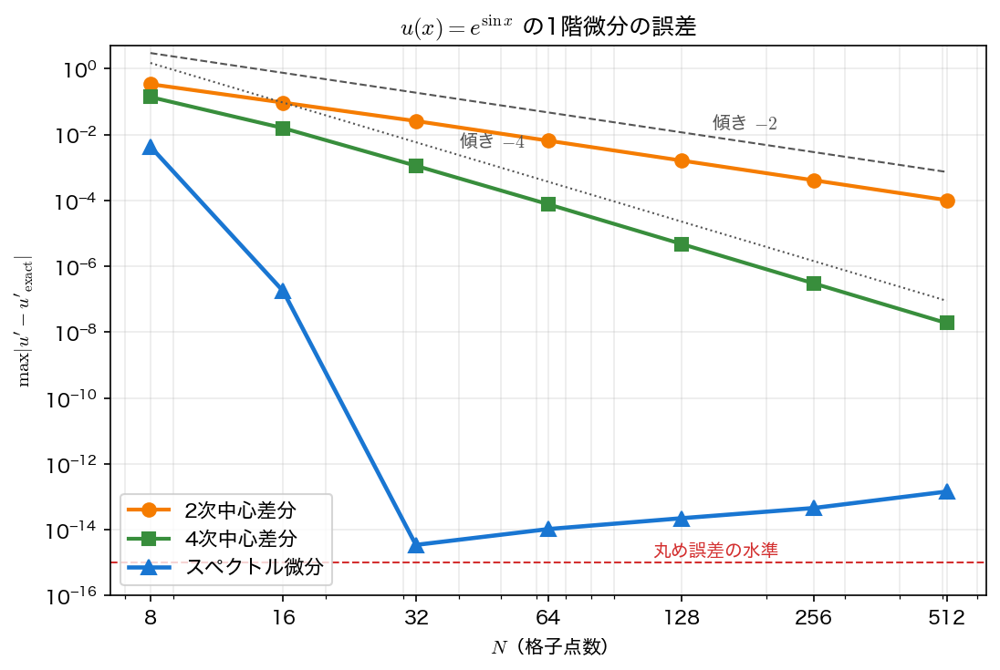
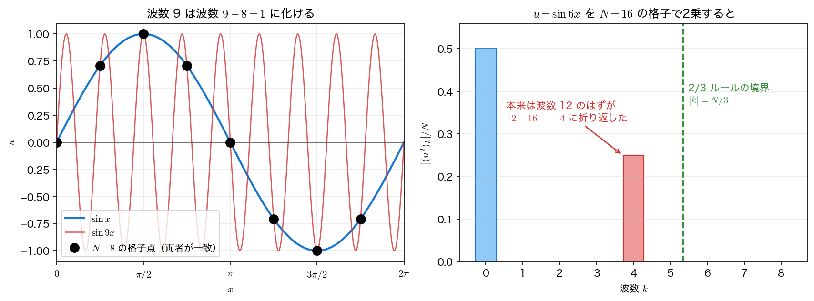

スペクトル法
前ページで、\(N\) 点の周期的な数列とその \(N\) 個のフーリエ係数のあいだを \(O(N\log N)\) で行き来できるようになった。ここからが本題である——フーリエ空間に移ると微分が掛け算になる。
差分のように「近くの点から傾きを推定する」のではなく、微分の定義をそのまま実行する。近似が入るのは有限個の \(k\) で打ち切るところだけで、その打ち切り誤差は滑らかな関数に対して信じがたいほど小さい。
フーリエ微分の3行
実装は次の3段階に尽きる。
- FFT で \(u_j\mapsto\hat u_k\)
- 各係数に \((\mathrm{i}k)^p\) を掛ける（\(p\) 階微分）
- 逆 FFT で実空間に戻す
/* スペクトル微分: FFT → ik 倍 → 逆 FFT */
static void spec_diff(const double *u, double *du, int n)
{
cplx *a = malloc(n*sizeof(cplx));
for (int j = 0; j < n; j++) a[j] = cset(u[j], 0.0);
fft(a, n, -1);
for (int j = 0; j < n; j++)
a[j] = cmul(cset(0.0, (double)wavenum(j, n)), a[j]);
fft(a, n, +1);
for (int j = 0; j < n; j++) du[j] = a[j].re/n;
free(a);
}
注意すべきは wavenum である。FFT の出力は \(k=0,1,\dots,N-1\) の順に並ぶが、微分に使う \(k\) は
と後半を負の波数として読み替える必要がある。これを忘れて \(k=0,\dots,N-1\) のまま \(\mathrm{i}k\) を掛けると、微分でも何でもないものが出てくる。理由は明快で、格子上では \(e^{\mathrm{i}(N-1)x_j}=e^{-\mathrm{i}x_j}\) ——波数 \(N-1\) と波数 \(-1\) は格子上で完全に同じだからである。より滑らかな（波数の絶対値が小さい）ほうを採るのが正しい解釈になる。
なぜ指数的に速く収束するのか
打ち切り誤差の正体は単純である。\(N\) 点の格子で表せるのは \(\lvert k\rvert\le N/2\) の成分だけなので、捨てているのはそれより高い波数の成分である。したがって
——フーリエ係数の減り方がそのまま精度になる。そして係数の減り方は、関数の滑らかさで決まる。
| \(u(x)\) の性質 | \(\hat u_k\) の減り方 | 誤差の減り方 |
|---|---|---|
| 不連続（矩形波など） | \(\lvert\hat u_k\rvert\sim1/k\) | \(O(1)\)（ギブス現象） |
| \(C^m\) 級（\(m\) 階まで連続） | \(\lvert\hat u_k\rvert\sim k^{-(m+1)}\) | \(O(N^{-m})\) |
| 実軸の近傍で解析的 | \(\lvert\hat u_k\rvert\sim e^{-ak}\) | \(O(e^{-aN/2})\)（指数的） |
| 整関数（\(e^{\sin x}\) など） | 指数よりさらに速い | 数十点で丸め誤差に到達 |
例題1の \(u=e^{\sin x}\) は最後の行に当たる。実際に係数を見ると
——\(k\) が 4 増えるごとに 4〜5 桁落ちている。\(N=32\)（\(\lvert k\rvert\le16\) まで表せる）なら捨てる成分は \(10^{-16}\) の水準しかなく、丸め誤差と区別がつかない。これがスペクトル精度である。

「無限次精度」という言い方について
スペクトル法は \(O(\Delta x^p)\) の \(p\) が有限の値を持たないので無限次精度とも呼ばれる。ただしこれは「常に高精度」という意味ではない。上の表のとおり、関数が滑らかでなければ差分法と同程度かそれ以下になる。\(C^1\) 級（1階までしか連続でない）の関数なら誤差は \(O(N^{-1})\) でしかなく、2次中心差分に負ける。演習3でこれを数値で確認する。
微分行列としての見方
フーリエ微分は、結局のところ格子上のベクトル \(\mathbf u\) にある行列 \(D\) を掛ける操作である（FFT・\(\mathrm{i}k\) 倍・逆 FFT がすべて線形写像だから）。\(D\) は密行列で、\(u'(x_i)\) の計算に全点 \(u_0,\dots,u_{N-1}\) が寄与する。
これが差分法との本質的な違いである。
| 差分法 | スペクトル法 | |
|---|---|---|
| 微分行列 | 帯行列（2次なら3重対角） | 密行列 |
| 素朴な計算量 | \(O(N)\) | \(O(N^2)\) |
| FFT を使うと | — | \(O(N\log N)\) |
| 情報の伝わり方 | 局所的 | 大域的 |
「\(N^2\) 回のかけ算になるはずのものが \(N\log N\) で済む」——FFT があるからスペクトル法が実用になるという依存関係が、ここでも見える。なお、密行列であることには物理的な副作用もある。差分法では1ステップで情報が隣の格子点までしか伝わらないが、スペクトル法では全領域に瞬時に伝わる。有限の伝播速度を持つ双曲型の問題では、この点が議論になることがある。
ナイキストモードの扱い
\(k=N/2\)（ナイキスト波数）だけは特別扱いが要る。この波数のモードは格子上で
——1格子ごとに符号が変わる市松モードである。第9回・第12回で安定性を壊す犯人として何度も登場した、あの \(\theta=\pi\) のモードである。
問題は、このモードでは \(\cos(Nx/2)\) と \(\sin(Nx/2)\) のうち後者が格子上で恒等的に \(0\) になることである。\(\sin(\pi j)=0\) だから、格子の情報だけでは \(\sin\) 成分の有無が分からない。ところが \(\cos(Nx/2)\) の微分は \(-\frac{N}{2}\sin(Nx/2)\) ——つまり格子上で見えない量である。微分の値が格子の情報から決まらない。
そこで奇数階の微分ではナイキストモードの係数を \(0\) にするという規約を置く。上のコードの
がそれである。実数入力なら \(\hat u_{N/2}\) は実数なので、\(\mathrm{i}(N/2)\hat u_{N/2}\) は純虚数になり、逆変換の実部を取る実装では自動的に落ちる。しかし複素数のまま扱う場合や、微分を2回続けて掛ける場合には不整合が出るので、明示的に \(0\) にしておくのが安全である。
一方、偶数階の微分では \(0\) にしてはいけない。2階微分の係数 \(-k^2\) は \(-(N/2)^2\) で、\(\cos(Nx/2)\) の2階微分 \(-\frac{N^2}{4}\cos(Nx/2)\) は格子上でちゃんと見える量だからである。ここを誤って \(0\) にすると、市松モードの拡散がまったく効かなくなり、陽的時間積分の安定限界が変わってしまう（演習4で実際にこの点が効いてくる）。
エイリアシング
格子が表せるのは \(\lvert k\rvert\le N/2\) までである。ではそれより高い波数の関数を標本化するとどうなるか——消えるのではなく、低い波数に化ける。
格子の上では、波数 \(k\) と \(k\pm N\)、\(k\pm2N\)、… が完全に同一である。これをエイリアシング（aliasing、別名現象）と呼ぶ。\(N=8\) の格子では \(\sin9x\) と \(\sin x\) が \(10^{-15}\) の精度で一致する——標本点だけを見ている限り、両者は区別できない。

線形の問題では、初期条件に高波数がなければ高波数は生まれないので、エイリアシングは実害を出しにくい。問題になるのは非線形項である。
非線形項と 2/3 ルール
\(u^2\) や \(u\,\partial_x u\) のような非線形項は、フーリエ空間では畳み込みになる。
波数 \(k_1\) と \(k_2\) の成分が掛かると波数 \(k_1+k_2\) が生まれる——非線形項は必ず高波数を作る。\(\lvert k\rvert\le K\) の成分しか持たない \(u\) でも、\(u^2\) は \(\lvert k\rvert\le2K\) まで広がる。\(2K>N/2\) ならその分は格子に収まらず、低波数に折り返して偽の成分を作る。
図の右側がその実例である。\(u=\sin6x\)、\(N=16\) のとき \(u^2=(1-\cos12x)/2\) は \(k=0\) と \(\lvert k\rvert=12\) の成分しか持たないのに、\(k=4\) に \(0.25\) が現れている。これは物理ではなく計算の産物であり、時間発展の中で毎ステップ蓄積すると、エネルギーが誤った波数に溜まって計算が破綻する。
対処が 2/3 ルール（2/3 dealiasing rule）である。非線形項を計算するたびに、\(\lvert k\rvert>N/3\) の係数を強制的に \(0\) にする。理由は次のとおりである。
- 保持する波数を \(\lvert k\rvert\le K\) とすると、2次の非線形項が作る波数は \(\lvert k\rvert\le2K\)
- そのうち \(\lvert k\rvert>N/2\) の分が折り返し、波数 \(2K-N\)（負の側）に現れる
- この折り返し先が保持帯に入らない条件は \(N-2K>K\)、すなわち
\(N=16\) なら \(K=5\) で、折り返し先は \(\lvert16-10\rvert=6>5\) ——保持帯の外に落ちるので汚染されない。捨てるのは全体の \(1/3\) で、\(N\) 点の格子で実質 \(2N/3\) 点ぶんの分解能しか使わないことになるが、偽のエネルギーが混入しないことのほうが重要である。
2/3 ルールを使うべきかどうか
デエイリアシングは万能薬ではない。\(1/3\) の波数を捨てるということは、その分だけ解像度を落とすということでもある。実際、分解能がぎりぎりの計算では、2/3 ルールを入れたほうが誤差が大きくなることさえある（捨てた帯に本物の信号が乗っているため）。
判断の目安は「高波数の係数が十分に小さいか」である。粘性が十分あって \(\hat u_k\) が高波数で丸め誤差の水準まで落ちているなら、折り返しても実害はなく、デエイリアシングは不要である。逆に粘性がゼロに近く高波数まで振幅が残る問題（非粘性のバーガース方程式、高レイノルズ数の乱流）では必須になる。演習4で、非粘性バーガース方程式のエネルギー保存を指標に、この違いを 11 桁の差として観測する。
サンプルコード
スペクトル微分の精度・フーリエ係数の減衰・エイリアシング・非線形項の折り返しを1本で確かめる。
#include <stdio.h>
#include <stdlib.h>
#include <math.h>
/* 第13回 フーリエ微分（スペクトル微分）と差分の比較
周期関数 u(x) = exp(sin x) を [0, 2pi) の等間隔格子で標本化し、
(a) 2次中心差分 (b) 4次中心差分 (c) スペクトル微分 で u'(x) = cos x exp(sin x) を求める。
スペクトル微分は「FFT → 各モードに ik を掛ける → 逆 FFT」の3行で書ける。
さらに、フーリエ係数の減衰・エイリアシング・2/3 ルールも数値で確かめる。 */
static const double PI = 3.14159265358979323846;
typedef struct { double re, im; } cplx;
static cplx cset(double re, double im) { cplx z; z.re = re; z.im = im; return z; }
static cplx cadd(cplx a, cplx b) { return cset(a.re + b.re, a.im + b.im); }
static cplx csub(cplx a, cplx b) { return cset(a.re - b.re, a.im - b.im); }
static cplx cmul(cplx a, cplx b)
{
return cset(a.re*b.re - a.im*b.im, a.re*b.im + a.im*b.re);
}
/* クーリー＝テューキー法（基数2・再帰）。n は2のべきであること。
x を上書きする。sign = -1 が順変換、+1 が逆変換（1/n は付けない） */
static void fft(cplx *x, int n, int sign)
{
if (n == 1) return;
int m = n/2;
cplx *e = malloc(m*sizeof(cplx));
cplx *o = malloc(m*sizeof(cplx));
for (int i = 0; i < m; i++) { e[i] = x[2*i]; o[i] = x[2*i+1]; }
fft(e, m, sign);
fft(o, m, sign);
for (int k = 0; k < m; k++) { /* バタフライ演算 */
double th = sign*2.0*PI*k/n;
cplx t = cmul(cset(cos(th), sin(th)), o[k]);
x[k] = cadd(e[k], t);
x[k+m] = csub(e[k], t);
}
free(e); free(o);
}
/* 格子番号 j に対応する波数。N/2 より上は負の波数として折り返す */
static int wavenum(int j, int n)
{
if (j == n/2) return 0; /* ナイキストモードは微分では捨てる */
return (j <= n/2) ? j : j - n;
}
/* スペクトル微分: FFT → ik 倍 → 逆 FFT */
static void spec_diff(const double *u, double *du, int n)
{
cplx *a = malloc(n*sizeof(cplx));
for (int j = 0; j < n; j++) a[j] = cset(u[j], 0.0);
fft(a, n, -1);
for (int j = 0; j < n; j++)
a[j] = cmul(cset(0.0, (double)wavenum(j, n)), a[j]);
fft(a, n, +1);
for (int j = 0; j < n; j++) du[j] = a[j].re/n;
free(a);
}
int main(void)
{
printf("=== フーリエ微分と差分の比較: u(x) = exp(sin x) ===\n\n");
/* --- (1) 微分の誤差 --- */
printf("--- (1) 最大誤差 max|u' - u'_exact| ---\n");
printf(" N 2次差分 比 4次差分 比 スペクトル\n");
FILE *fe = fopen("spectral_error.dat", "w"); /* 作図用 */
fprintf(fe, "# N err_fd2 err_fd4 err_spectral\n");
double p2 = 0.0, p4 = 0.0;
for (int m = 3; m <= 8; m++) {
int n = 1 << m;
double h = 2.0*PI/n;
double *u = malloc(n*sizeof(double));
double *ex = malloc(n*sizeof(double));
double *d = malloc(n*sizeof(double));
for (int j = 0; j < n; j++) {
double x = j*h;
u[j] = exp(sin(x));
ex[j] = cos(x)*exp(sin(x));
}
double e2 = 0.0, e4 = 0.0, es = 0.0;
for (int j = 0; j < n; j++) {
int jm2 = (j - 2 + 2*n) % n, jm1 = (j - 1 + n) % n;
int jp1 = (j + 1) % n, jp2 = (j + 2) % n;
double a2 = (u[jp1] - u[jm1])/(2.0*h);
double a4 = (u[jm2] - 8.0*u[jm1] + 8.0*u[jp1] - u[jp2])/(12.0*h);
if (fabs(a2 - ex[j]) > e2) e2 = fabs(a2 - ex[j]);
if (fabs(a4 - ex[j]) > e4) e4 = fabs(a4 - ex[j]);
}
spec_diff(u, d, n);
for (int j = 0; j < n; j++)
if (fabs(d[j] - ex[j]) > es) es = fabs(d[j] - ex[j]);
if (m == 3) printf(" %5d %10.3e --- %10.3e --- %10.3e\n", n, e2, e4, es);
else printf(" %5d %10.3e %6.2f %10.3e %6.2f %10.3e\n",
n, e2, p2/e2, e4, p4/e4, es);
fprintf(fe, "%d %.10e %.10e %.10e\n", n, e2, e4, es);
p2 = e2; p4 = e4;
free(u); free(ex); free(d);
}
fclose(fe);
printf(" 差分は誤差比が 4（2次）・16（4次）に近づく＝代数的収束。\n");
printf(" スペクトル微分は N を倍にするたびに桁で改善し、N = 32 で丸め誤差に到達する。\n");
printf(" これがスペクトル精度（無限次精度）である。\n");
/* --- (2) フーリエ係数の減衰 --- */
printf("\n--- (2) フーリエ係数の大きさ |u_k| / N（N = 64）---\n");
{
int n = 64;
cplx *a = malloc(n*sizeof(cplx));
for (int j = 0; j < n; j++) a[j] = cset(exp(sin(2.0*PI*j/n)), 0.0);
fft(a, n, -1);
printf(" k |u_k|/N\n");
for (int k = 0; k <= 12; k++)
printf(" %5d %10.3e\n", k, sqrt(a[k].re*a[k].re + a[k].im*a[k].im)/n);
printf(" 滑らかな周期関数の係数は指数より速く減衰する。\n");
printf(" 打ち切り誤差は捨てた最大の係数と同程度なので、これがスペクトル精度の正体である。\n");
free(a);
}
/* --- (3) エイリアシング --- */
printf("\n--- (3) エイリアシング（N = 8 の格子）---\n");
{
int n = 8;
FILE *fa = fopen("aliasing_sample.dat", "w"); /* 作図用 */
fprintf(fa, "# j x sin(x) sin(9x)\n");
printf(" j x_j sin(x_j) sin(9 x_j) 差\n");
for (int j = 0; j < n; j++) {
double x = 2.0*PI*j/n;
printf(" %5d %8.5f %9.5f %10.5f %8.1e\n",
j, x, sin(x), sin(9.0*x), fabs(sin(9.0*x) - sin(x)));
fprintf(fa, "%d %.10e %.10e %.10e\n", j, x, sin(x), sin(9.0*x));
}
fclose(fa);
printf(" 波数 9 は 9 - 8 = 1 と区別できない。N 点の格子が表せるのは |k| <= N/2 だけである。\n");
}
/* --- (4) 非線形項が生む折り返しと 2/3 ルール --- */
printf("\n--- (4) 非線形項の折り返し（N = 16, u = sin(6x) の2乗）---\n");
{
int n = 16;
cplx *a = malloc(n*sizeof(cplx));
for (int j = 0; j < n; j++) {
double v = sin(6.0*2.0*PI*j/n);
a[j] = cset(v*v, 0.0);
}
fft(a, n, -1);
FILE *fs = fopen("nonlinear_spectrum.dat", "w"); /* 作図用 */
fprintf(fs, "# k |(u^2)_k|/N\n");
printf(" k |(u^2)_k|/N （厳密には k = 0 と |k| = 12 のみ）\n");
for (int k = 0; k <= n/2; k++) {
double m = sqrt(a[k].re*a[k].re + a[k].im*a[k].im)/n;
printf(" %5d %10.3e%s\n", k, m, (m > 1e-10 && k > 0) ? " <-- 偽のモード" : "");
fprintf(fs, "%d %.10e\n", k, m);
}
fclose(fs);
printf(" u^2 = (1 - cos 12x)/2 の波数 12 はナイキスト 8 を超えるので、\n");
printf(" 12 - 16 = -4 すなわち波数 4 に化けて現れる。これがエイリアシング誤差である。\n");
printf(" 2/3 ルール: |k| > N/3 = %d の係数を毎回 0 にすれば、2次の非線形項の折り返しは完全に除去できる。\n", n/3);
free(a);
}
return 0;
}
コンパイル・実行:
実行結果
=== フーリエ微分と差分の比較: u(x) = exp(sin x) ===
--- (1) 最大誤差 max|u' - u'_exact| ---
N 2次差分 比 4次差分 比 スペクトル
8 3.402e-01 --- 1.384e-01 --- 4.318e-03
16 9.359e-02 3.64 1.575e-02 8.79 1.762e-07
32 2.583e-02 3.62 1.132e-03 13.92 4.441e-15
64 6.512e-03 3.97 7.590e-05 14.91 1.003e-14
128 1.631e-03 3.99 4.783e-06 15.87 2.265e-14
256 4.086e-04 3.99 2.998e-07 15.95 5.243e-14
差分は誤差比が 4（2次）・16（4次）に近づく＝代数的収束。
スペクトル微分は N を倍にするたびに桁で改善し、N = 32 で丸め誤差に到達する。
これがスペクトル精度（無限次精度）である。
--- (2) フーリエ係数の大きさ |u_k| / N（N = 64）---
k |u_k|/N
0 1.266e+00
1 5.652e-01
2 1.357e-01
3 2.217e-02
4 2.737e-03
5 2.715e-04
6 2.249e-05
7 1.599e-06
8 9.961e-08
9 5.518e-09
10 2.753e-10
11 1.249e-11
12 5.196e-13
滑らかな周期関数の係数は指数より速く減衰する。
打ち切り誤差は捨てた最大の係数と同程度なので、これがスペクトル精度の正体である。
--- (3) エイリアシング（N = 8 の格子）---
j x_j sin(x_j) sin(9 x_j) 差
0 0.00000 0.00000 0.00000 0.0e+00
1 0.78540 0.70711 0.70711 1.1e-16
2 1.57080 1.00000 1.00000 0.0e+00
3 2.35619 0.70711 0.70711 1.2e-15
4 3.14159 0.00000 0.00000 9.8e-16
5 3.92699 -0.70711 -0.70711 2.2e-16
6 4.71239 -1.00000 -1.00000 0.0e+00
7 5.49779 -0.70711 -0.70711 6.7e-16
波数 9 は 9 - 8 = 1 と区別できない。N 点の格子が表せるのは |k| <= N/2 だけである。
--- (4) 非線形項の折り返し（N = 16, u = sin(6x) の2乗）---
k |(u^2)_k|/N （厳密には k = 0 と |k| = 12 のみ）
0 5.000e-01
1 1.385e-16
2 1.112e-16
3 1.010e-16
4 2.500e-01 <-- 偽のモード
5 1.010e-16
6 1.112e-16
7 1.385e-16
8 3.331e-16
u^2 = (1 - cos 12x)/2 の波数 12 はナイキスト 8 を超えるので、
12 - 16 = -4 すなわち波数 4 に化けて現れる。これがエイリアシング誤差である。
2/3 ルール: |k| > N/3 = 5 の係数を毎回 0 にすれば、2次の非線形項の折り返しは完全に除去できる。
読み取るべき点が4つある。
- 差分の誤差比は理論どおり 4 と 16 に収束する。 2次中心差分が \(3.99\)、4次中心差分が \(15.95\) ——第9回で空間2次精度を確認したのと同じ測り方である。同じ土俵で比較していることがここで担保される。
- スペクトル微分は \(N=8\to16\to32\) で \(4.3\times10^{-3}\to1.8\times10^{-7}\to4.4\times10^{-15}\)。 誤差比は 4 でも 16 でもなく、\(2\times10^4\)、\(4\times10^7\) ——倍にするごとに改善率そのものが増える。これが代数的収束と指数的収束の違いである。\(N\ge32\) で \(10^{-14}\) 台に張り付き、以後わずかに増えるのは FFT の丸め誤差が \(O(\varepsilon\log N)\) で増えるためで、収束が止まったわけではない。
- 係数の減衰が精度の正体であることが数字で見える。 \(N=32\) で捨てられるのは \(\lvert k\rvert>16\) の成分だが、\(\lvert\hat u_{12}\rvert/N\) の時点ですでに \(5.2\times10^{-13}\)、\(\lvert k\rvert=16\) ではさらに数桁下である。(1) の \(N=32\) の誤差 \(4.4\times10^{-15}\) とつじつまが合う。
- 偽のモードの振幅は本物と同じ \(0.25\) である。 \(k=4\) に現れた成分は、\(\lvert k\rvert=12\) にあるべき成分がそっくり移動してきたもので、小さな誤差ではない。\(k=1,2,3,5,6,7\) が \(10^{-16}\) であることと対比すると、折り返しが「ぼやける」のではなく「まるごと化ける」現象であることが分かる。
可視化
spectral_diff.c は3つのファイルを書き出す。spectral_error.dat（N err_fd2 err_fd4 err_spectral）は (1) の表そのもの、aliasing_sample.dat（j x sin(x) sin(9x)）は (3) の標本、nonlinear_spectrum.dat（k |(u^2)_k|/N）は (4) のスペクトルである。
import numpy as np
import matplotlib.pyplot as plt
from matplotlib.ticker import NullFormatter
# --- 図1: 収束の速さ ---
d = np.loadtxt("spectral_error.dat")
N, e2, e4, es = d[:, 0], d[:, 1], d[:, 2], d[:, 3]
fig, ax = plt.subplots(figsize=(7.4, 5.0))
ax.loglog(N, e2, "o-", lw=2.0, label="2nd-order FD")
ax.loglog(N, e4, "s-", lw=2.0, label="4th-order FD")
ax.loglog(N, es, "^-", lw=2.2, label="spectral")
# 目安の傾き。漸近域（右端）に合わせて引く
ax.loglog(N, e2[-1] * (N / N[-1]) ** -2.0, "--", color="gray", lw=1.0)
ax.loglog(N, e4[-1] * (N / N[-1]) ** -4.0, ":", color="gray", lw=1.0)
ax.text(N[4], 3.0 * e2[-1] * (N[4] / N[-1]) ** -2.0, "slope -2", color="gray")
ax.text(N[2], 3.0 * e4[-1] * (N[2] / N[-1]) ** -4.0, "slope -4", color="gray")
ax.axhline(1e-15, color="red", ls="--", lw=1.0)
ax.text(N[3], 1.6e-15, "round-off level", color="red")
ax.set_xlabel("N")
ax.set_ylabel("max|u' - u'_exact|")
ax.set_title("Error of the first derivative of u = exp(sin x)")
ax.set_xticks(N)
ax.set_xticklabels([str(int(v)) for v in N])
ax.xaxis.set_minor_formatter(NullFormatter())
ax.set_ylim(1e-16, 5.0)
ax.legend(loc="lower left")
ax.grid(alpha=0.3, which="both")
fig.tight_layout()
fig.savefig("spectral_accuracy.png", dpi=150)
# 誤差そのものより「倍にしたときの比」を見ると収束の型が分かる
for name, e in (("2nd", e2), ("4th", e4), ("spectral", es)):
print(f"{name:9s}" + " ".join(f"{e[i - 1] / e[i]:10.3g}" for i in range(1, len(N))))
# --- 図2: エイリアシングと 2/3 ルール ---
s = np.loadtxt("aliasing_sample.dat")
xg, s1, s9 = s[:, 1], s[:, 2], s[:, 3]
k, amp = np.loadtxt("nonlinear_spectrum.dat", unpack=True)
fig, (ax1, ax2) = plt.subplots(1, 2, figsize=(12.4, 4.6))
xs = np.linspace(0.0, 2.0 * np.pi, 800) # 連続な曲線は Python 側で描く
ax1.plot(xs, np.sin(xs), "-", lw=2.0, label="sin x")
ax1.plot(xs, np.sin(9.0 * xs), "-", lw=1.2, alpha=0.8, label="sin 9x")
ax1.plot(xg, s1, "o", color="k", ms=9, zorder=5, label="N = 8 grid (both agree)")
ax1.axhline(0.0, color="gray", lw=0.8)
ax1.set_xlim(0.0, 2.0 * np.pi)
ax1.set_xlabel("x")
ax1.set_ylabel("u")
ax1.set_title("Wavenumber 9 is indistinguishable from 9 - 8 = 1")
ax1.legend(loc="lower left")
ax1.grid(alpha=0.3)
print(f"max|sin(9x) - sin(x)| on the grid = {np.abs(s9 - s1).max():.1e}")
ax2.bar(k, amp, width=0.55, color="#BBDEFB", edgecolor="#1976D2")
ax2.bar([4], [amp[4]], width=0.55, color="#EF9A9A", edgecolor="#D32F2F")
ax2.annotate("alias of k = 12", xy=(4.3, amp[4]), xytext=(5.6, 0.30),
color="#D32F2F",
arrowprops=dict(arrowstyle="->", color="#D32F2F", lw=1.2))
ax2.axvline(16.0 / 3.0, color="green", ls="--", lw=1.6)
ax2.text(16.0 / 3.0 + 0.15, 0.42, "2/3 rule: |k| = N/3", color="green", va="top")
ax2.set_xlabel("wavenumber k")
ax2.set_ylabel("|(u^2)_k| / N")
ax2.set_title("Square of sin 6x sampled on N = 16")
ax2.set_xticks(k)
ax2.set_ylim(0.0, 0.56)
ax2.grid(alpha=0.3, axis="y")
fig.tight_layout()
fig.savefig("aliasing.png", dpi=150)
print(f"alias at k = 4: {amp[4]:.4f} (the true k = 0 component is {amp[0]:.4f})")
実行:
誤差そのものではなく倍にしたときの比を印字させているのがこの図の要点である。出力は
2nd 3.64 3.62 3.97 3.99 3.99
4th 8.79 13.9 14.9 15.9 16
spectral 2.45e+04 3.97e+07 0.443 0.443 0.432
で、差分の比は \(N\) を倍にしても \(4\)・\(16\) のまま一定なのに対し、スペクトル微分は \(2\times10^4\)、\(4\times10^7\) と比そのものが増えていく。代数的収束と指数的収束の違いは、誤差の値を並べるより比を見たほうがはっきりする。\(N\ge64\) で比が \(0.44\)——つまり \(1\) を下回り、誤差がむしろわずかに増える——のは丸め誤差の床に着いたためで、axhline(1e-15) の赤線がその床である。FFT は \(\log_2N\) 段を経るので丸め誤差が \(O(\varepsilon\log N)\) でゆっくり増える。収束が止まったのではなく、測っているものが打ち切り誤差から丸め誤差に入れ替わっている。
左の図の連続曲線 \(\sin x\)・\(\sin 9x\) は Python 側で描いている。C が書き出すのは格子点 8 個の標本だけで、格子上では両者の差が 9.8e-16 しかない——データだけ見ても2つの波は区別できないというのがエイリアシングの主張そのものなので、比較する曲線は解析的に描くほかない。
右の図の折り返しモードの振幅は 0.2500 で、本来 \(\lvert k\rvert=12\) にあるべき \(0.25\) がそっくり \(k=4\) に移動している。
なお講義ノートの図は \(N=512\) まで描いてあるが、spectral_diff.c が計算するのは \(N=256\) までである。同じ範囲にしたければ (1) のループを m <= 9 にすればよい。
まとめ
- スペクトル微分は「FFT → \((\mathrm{i}k)^p\) 倍 → 逆 FFT」の3段階。\(O(N\log N)\) で、行列としては密行列に相当する。
- 波数は \(k=0,\dots,N/2-1,-N/2,\dots,-1\) と後半を負として読む。格子上では波数 \(k\) と \(k+N\) が同一だからである。
- 誤差はフーリエ係数の減り方で決まる。解析的な周期関数なら指数的、\(C^m\) 級なら \(O(N^{-m})\)、不連続なら \(O(1)\)。\(e^{\sin x}\) では \(N=32\) で丸め誤差に到達した。
- ナイキストモード（\(k=N/2\)）は奇数階微分で \(0\) にする（格子上で \(\sin(Nx/2)\equiv0\) のため微分が決まらない）。偶数階では \(-k^2\) をそのまま使う。
- 格子は \(\lvert k\rvert\le N/2\) しか表せず、それより高い波数は低波数に化ける（エイリアシング）。
- 非線形項は必ず高波数を作るので、2/3 ルール（毎回 \(\lvert k\rvert>N/3\) を \(0\) にする）で折り返しを除去する。解像度は \(1/3\) 減るが、偽のエネルギー混入を防げる。